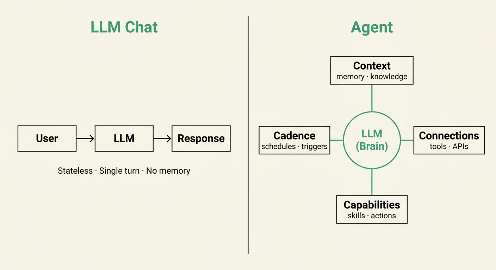
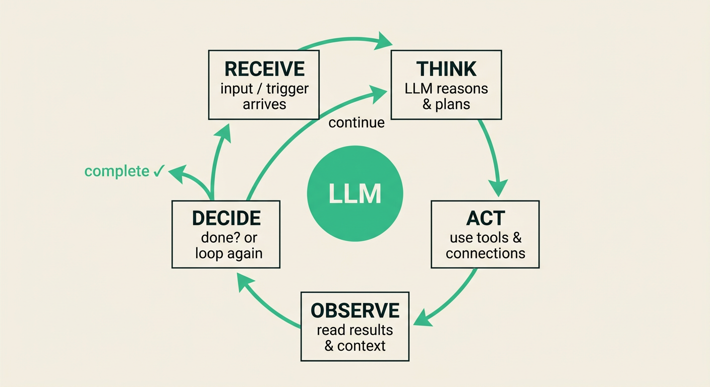

Delivery Leadership in Human+AI Teams
The Iteration Manager
in the Age of Agents
Own what agents can generate but can't decide.
The real question
The jobs question is settled.
The structure question isn't.
What "agent" actually means
Agent capability
is a ladder.
As agents climb it, your job moves from doing the work, to steering it, to governing it.
Synthesis · autonomy framing after Feng, McDonald & Zhang (Univ. of Washington, 2025); cf. SAE J3016, Cloud Security Alliance 2026
Chat ends when you stop typing. Agents don't.

The loop runs until it hits a gate you designed.

Engineers on the team are already running agents. The coordination isn't keeping up.
Increase in PR review time · DORA 2025
As engineering throughput accelerated with agentic tooling, PR review time jumped 441%. The bottleneck shifted right — more work in, same review capacity out.
Stack Overflow 2025 (n=65,000+): 31% of developers using agents · 51% daily AI use
AI4Agile 2026 (n=289): IM cohort at chatbot-level · engineering teams agentic
"AI Hasn't Fixed Teamwork" (arXiv, 2023–2025): individual AI adoption does not improve team coordination
Using AI agents in daily work
Several ways of working with AI, all informal
Coordination quietly getting harder
Extra review work nobody is tracking
Still mostly using chatbots
No agreed way to govern agent work
No deliberate choice of how humans stay involved
Same ceremonies as before
of agile practitioners already use AI tools
AI4Agile Practitioners Report 2026 · n=289
spend 10% or less of work time with AI
Same survey
What actually happens when a delivery team runs
with AI —
not beside it?
For complex, generative work — the upside is real
quality uplift, human+AI vs. solo
BCG RCT · Organization Science 2026 · n=758
faster task completion
BCG · same study
more likely to produce a top-10% solution
P&G RCT · NBER 2025 · n=776
On decision tasks, human+AI underperforms the best solo performer
studies analysed
Malone et al. · Nature Human Behaviour 2024
were decision or classification tasks
Task-type breakdown
The advantage is real — and conditional on task type
Generative + iterative work only
Most businesses don't redesign. They bolt AI on.
of businesses report measurable profit gains from AI
McKinsey MGI · AI adoption research
They layer AI on top of legacy workflow. The workflow never changes.
Requirements drafts
User stories
Sprint tracking
Status reports
Dependency mapping
Stand-up summaries
Design choices
Risk thresholds
Approval gates
Production calls
Agentic workflow architecture
The gap between those two numbers is where the risk lives
of agile teams use AI tools
Digital.ai · 18th State of Agile 2025 · n=350
of those teams have governance guardrails
Same survey
Drafts
Tracking
Analysis
Dependency detection
Test coverage
Communication summaries
Risk tolerance calls
Approval gates
Production decisions
Competing stakeholder interests
Ethical edge cases
Weak human + machine + better process
beat the grandmaster.
Process design is the variable. That is the IM's job.
Judgment
Accountability
Context
Stakeholder navigation
Final sign-off
Speed
Throughput
Pattern matching
Draft generation
Spec execution
Kasparov · NYRB 2010 · 2005 Freestyle Chess Championship
A governance decision — the IM picks the pattern, not the agent
You decide which pattern.
The agent can't.
This is workflow design — set before the agent runs. That's architecture, not the in-task judgment calls where adding AI degrades the decision.
Tech lead absorbs the workflow
A new AI-governance specialist takes the risk
No single owner of human-agent coordination
The role dissolves into its parts
You own the workflow architecture
You govern the human-in-the-loop patterns
You own risk at the human-AI boundary
One accountable owner — the role expands
Five failure modes
Agents don't slot in.
They collide —
unless you compose them.
What to build
Three capabilities.
One survival argument.
VERDICT, mapped to your cadence
Governance isn't a new ceremony.
It's the old ones, upgraded.
Three failure modes
No owner at the boundary.
Here is what that looks like.
Where most organisations sit — and where you move them
AI Governance Maturity.
Most teams are at Level 1–2.
VERDICT governance model · Srivastav & Saxena, 2026 (practitioner framework)
This week
Start with a question, not a plan.
The audit takes one sprint. It tells you where to put governance before someone else decides for you.
The 12-month path
Interpret the audit. Pick the workflow with the highest coordination risk and map it to a HITL pattern. Design one approval gate. Present the governance map to the team. This is not a committee proposal — it is an IM making a delivery decision.
HITL patterns visible in the Definition of Done. The squad's AI maturity is a known quantity, not an informal assumption. The IM is the conduit between the org's AI capability and the team's operating rhythm — whether or not a central CoE exists.
The IM owns the boundary. Engineers are moving fast; the governance layer is moving with them, not behind them. The 12 months did not start with a consultant — they started with a question in a sprint.
Bottom-up is not a philosophy — it is a delivery practice. The governance decisions happen in the work, not in a workshop.
The move
Own the decisions
agents can't make.
Start with the squad audit — this week.
The capability gap closes on its own.
The governance gap is yours to close.
Next step — speak to Adnan after this session
The team behind this deck
The Team


Reference material
Appendix
Malone et al. in full — why BCG and P&G results reconcile
studies, 370 effect sizes
Nature Human Behaviour 2024
decision/classification tasks — where AI degrades performance
Task-type breakdown
generative/creative tasks — where BCG and P&G results live
The conditional scope
Wave 1 dissolution — primary sources
SM training enrollment at peak (2020)
Wolpers enrollment data
SM enrollment by 2024
Wolpers · same longitudinal data
of orgs now report dedicated Agile Coach demand
Scrum Alliance · 2024
Cessan: "Capital is expensive, companies now demand real returns on every role."
Governance failure — primary sources for the two named incidents
Full credential landscape — start with the first three